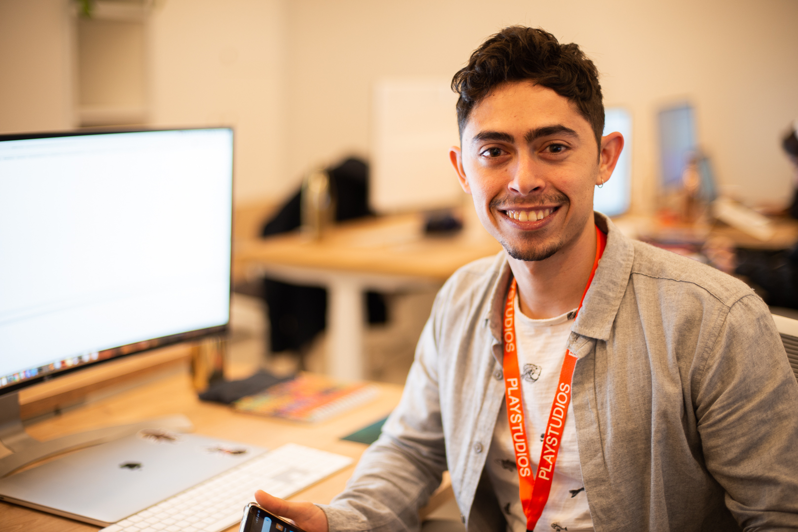

About Me
Personal
Born and raised in Israel. Married and the father of 2 boys. I've always seen myself going into the education system in order to help seeing those that aren't always seen and making the knowledge more relatable and fun. I believe that through game development I can introduce programming concepts and tools in an enjoyable and relatable way.
Education
Started off in the high school of "Netiv Meir" in Jerusalem. Continued to the "Ben Gurion of the Negev" for my B.Sc. in Computer Science. Later I completed my Education certification in Computer Science also at the "Ben Gurion of the Negev". My practical side of the certification took place at Amit Dati Comprehensive High School Beer Sheva.
Work Experience
Immediately after completing my degree, I started working full time at the gaming company of "Playstudios". after 3 Years there, I took a year to complete my teaching certification and independent game programming ventures. Then I worked at "Moon Active" gaming company for over 3 years.